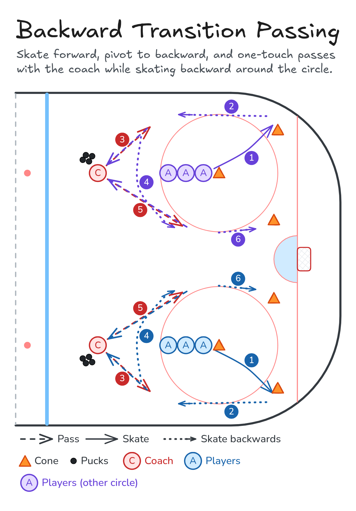

Backward Transition Passing
Skate forward, pivot to backward, and one-touch passes with the coach while skating backward around the circle.
- Half ice
- Skating
- Passing
- Defence
Watch
Diagram

Coaching points
- Head up. Watch the coach, not your skates.
- Knees bent and a wide stance when you skate backward.
- Stick on the ice as a target for the pass.
- Soft hands on the one-touch. Just redirect it back.
- Quick, tight pivots. Don't drift wide.
How it runs
- Run it in both circles at once. A line at the faceoff dot (cone on the dot), a coach with pucks toward the blue line, one cone wide by the boards and one inside by the slot.
- Skate forward to the wide cone.
- Pivot and skate backward down the boards toward the blue line.
- The coach passes. One-touch it straight back.
- Keep skating backward around the bottom of the circle and up the inside.
- Second pass from the coach. One-touch it back.
- Finish at the inside cone and go back to the line.
- Variation, Escapes: keep the first pass. Pivot forward toward the boards for a stride or two, pivot back to backward, carry around the bottom of the circle and pass to the coach. Take the second pass up the inside, escape toward the middle, pass it back and return.
Downloads

Open the Excalidraw file in Excalidraw to change the diagram.